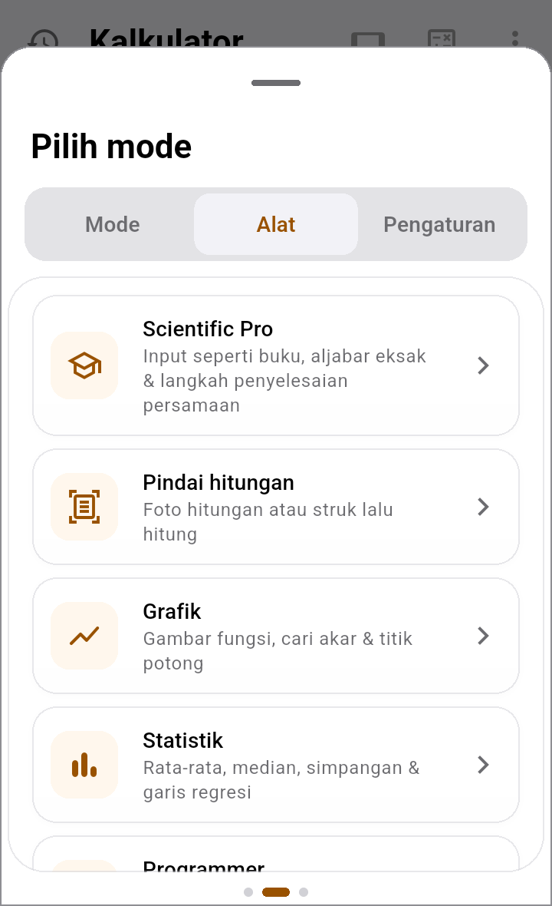

Semua alat ini gratis. Buka ikon mode di kanan atas kalkulator, lalu geser ke tab Alat.

Daftar alat di tab Alat. Ketuk salah satu untuk membukanya.
📷 Scan a sum: foto hitungan atau struk
Buka Pindai hitungan.
Pilih Ambil foto (kamera), Galeri (foto yang sudah ada), atau Ketik hitungan (ketik sendiri).
Periksa angka yang terbaca. Pilih format angkanya: 1.234,56 (format Indonesia, titik untuk ribuan) atau 1,234.56. Pada struk Indonesia, 25.000 artinya dua puluh lima ribu.
Ketuk Pakai di kalkulator. Hitungannya pindah ke kalkulator, tinggal tekan =.
PrivasiFoto dibaca di HP-mu sendiri dan tidak dikirim ke mana pun. Foto yang diambil dengan kamera dihapus setelah dibaca.
🎓 Scientific Pro: aljabar dan persamaan, langkah demi langkah
Hitung: ketik soal dengan tampilan seperti di buku (pecahan bertumpuk, akar). Hasilnya eksak, misalnya √8 menjadi 2√2.
Aljabar: menyederhanakan, menjabarkan, atau memfaktorkan bentuk aljabar dengan satu variabel x.
Selesaikan: isi Ruas kiri dan Ruas kanan persamaan linear atau kuadrat. Langkah penyelesaiannya ditampilkan satu per satu.
Ketuk Simpan ke Math Notes untuk menyimpan penyelesaiannya. Hasilnya muncul di Math Notes sebagai Worked examples.
Pilih Degrees atau Radians untuk sudut. Pilihanmu diingat.
📈 Graph: grafik fungsi
Ketik sampai 4 fungsi, misalnya x^2 - 4 dan 2x + 1.
Cubit untuk memperbesar, geser untuk berpindah, dan ketuk grafik untuk melihat titik di garisnya.
Akar, titik potong sumbu-y, dan titik potong antar grafik ditandai otomatis.
📊 Statistics
Satu daftar angka (pisahkan dengan koma): rata-rata, median, simpangan baku, kuartil, dan lainnya.
Pasangan x,y: garis regresi (garis tren) beserta persamaannya.
Alat lainnya
Alat
Gunanya
Programmer
Bilangan heksadesimal, biner, oktal, dan desimal sekaligus, plus operator bit (AND, OR, XOR, geser).
Date & Time
Jumlah hari di antara dua tanggal, umur, tanggal + sekian hari/bulan, dan menjumlahkan jam kerja.
Matrix
Determinan, invers, dan sistem persamaan sampai 6×6. Pecahan tetap pecahan, tidak dibulatkan.
Complex numbers
Hitung dengan i, dalam bentuk biasa atau polar.
Growth chart
Pertumbuhan tabungan atau sisa pinjaman per tahun, dalam bentuk grafik dan tabel.
Jawaban dalam bentuk pecahanDi tab Pengaturan, nyalakan Jawaban sebagai pecahan supaya kalkulator biasa menampilkan 1/3, bukan 0,333….